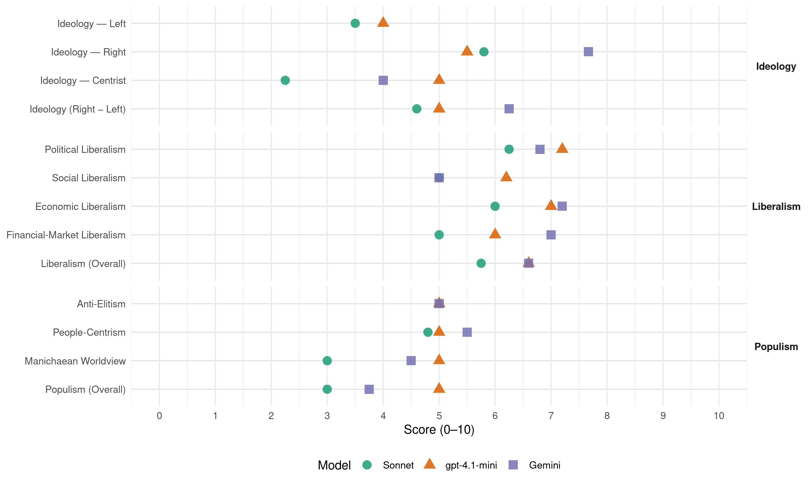

MHP (Turkey, 2011)
manifesto_id 74712_201106
Get full text: This site shows derived annotations and short verbatim quotes only. The full manifesto text is © Manifesto Project / WZB — obtain it via manifesto-project.wzb.eu using the manifesto_id above.
Headline scores
| Dimension | Sonnet | gpt-4.1-mini | Gemini |
|---|---|---|---|
| Populism (Overall) | 3.0 | 5.0 | 3.8 |
| Anti-Elitism | – | 5.0 | 5.0 |
| People-Centrism | 4.8 | 5.0 | 5.5 |
| Manichaean Worldview | 3.0 | 5.0 | 4.5 |
| Ideology (Right − Left) | 4.6 | 5.0 | 6.2 |
| Liberalism (Overall) | 5.8 | 6.6 | 6.6 |
| Political Liberalism | 6.2 | 7.2 | 6.8 |
| Social Liberalism | 5.0 | 6.2 | 5.0 |
| Economic Liberalism | 6.0 | 7.0 | 7.2 |
| Financial-Market Liberalism | 5.0 | 6.0 | 7.0 |
Evidence per dimension
Economic Liberalism
Gemini · score 8.0 · verified · chunk 1
“Rekabetçi piyasa ekonomisini ve serbest teşebbüsü”
temiz siyasettemiz yönetimi tesis etmek, Rekabetçi piyasa ekonomisini ve serbest teşebbüsü esas alan, kaynakların rasyonel kullanıldığı, bir
Gemini · score 8.0 · verified · chunk 2
“Piyasa ekonomisi kurallarının işletilerek tekelci oluşumların”
İstikrarlı ve istihdam dostu büyüme Piyasa ekonomisi kurallarının işletilerek tekelci oluşumların ve haksız rekabetin önlenmesi, kamunun ekonomideki
Gemini · score 7.0 · verified · chunk 3
“serbestleştirme ve özelleştirmeler etkin ve hızlı”
Hizmetler kapsamında, serbestleştirme ve özelleştirmeler etkin ve hızlı bir şekilde tamamlanacaktır.
Gemini · score 7.0 · verified · chunk 4
“Özel üniversite kurulması teşvik edilecek”
üniversite sistemine etkin geçişi sağlayan bir yapıya kavuşturulacaktır. Yükseköğretim dünya üniversiteleri ile rekabet edebilen seviyeye getirilecek Özel üniversite kurulması teşvik edilecek. Öğretim elemanları yurt içinde yetiştirilecek
Gemini · score 6.0 · verified · chunk 5
“demokrasi ve piyasa ekonomisine”
refah düzeylerinin artırılması, demokrasi ve piyasa ekonomisine geçiş süreçlerinin her yönüyle
gpt-4.1-mini · score 8.0 · verified · chunk 1
“Rekabetçi piyasa ekonomisini ve serbest teşebbüsü esas alan, kaynakların rasyonel kullanıldığı, bir ekonomik düzen oluşturmak”
…Rekabetçi piyasa ekonomisini ve serbest teşebbüsü esas alan, kaynakların rasyonel kullanıldığı, bir ekonomik düzen oluşturmak, Teknolojik gelişmeyi, verimliliği, istikrarlı büyümeyi ve istihdam sağlamayı esas alan güçlü bir “üretim ekonomisi” oluşturmak, Özel sektörün dinamizmini ve teşebbüs gücünü desteklemek.
gpt-4.1-mini · score 7.0 · verified · chunk 2
“Piyasa ekonomisi kurallarının işletilerek tekelci oluşumların ve haksız rekabetin önlenmesi, kamunun ekonomideki rolünün yol gösterici, düzenleyici ve denetleyici faaliyetler ile sınırlandırılması”
5-EKONOMİK HEDEF VE POLİTİKALAR Ekonomide onarım ve toparlanma gerçekleştirilecek. “2023’e Doğru Yükselen Ülke Türkiye” vizyonuna uygun olarak, 12 yıllık MHP iktidarını öngören uzun vadeli stratejimizin 2011-2015 yıllarını kapsayan Onarım ve Toparlanma döneminde, ekonomide de bir onarım ve toparlanma gerçekleştirilecektir. Bu kapsamda öncelikle ekonomiyle ilgili kurum ve kuruluşların eşgüdüm içinde çalışması ve daha etkin bir ekonomi yönetiminin sağlanması için, Ekonomi Bakanlığı kurulacak ve ilgili bakanlıklar ve kuruluşlar yeniden yapılandırılacaktır. Bu dönemde; istihdam dostu büyümeye öncelik verilecek, gelir dağılımında iyileşme sağlanacak, işsizlik ve yoksulluk sorunu önemli ölçüde hafifletilecek ve vatandaşlarımızın refah düzeyi yükseltilecektir. Ekonomi politikası insan merkezli ve refahın artırılması temel hedefli olacak. Ekonomi politikalarının merkezine insanı koyan; eşitlik, ahlak ve adalet ilkelerini gözeten bir yönetim anlayışıyla refahın artırılması temel hedefimiz olacaktır. a) Ekonomi Politikamızın Esasları İstikrarlı ve istihdam dostu büyüme Piyasa ekonomisi kurallarının işletilerek tekelci oluşumların ve haksız rekabetin önlenmesi, kamunun ekonomideki rolünün yol gösterici, düzenleyici ve denetleyici faaliyetler ile sınırlandırılması; özel sektör dinamizminin ve teşebbüs gücünün desteklendiği istikrarlı, çevreye duyarlı ve istihdam dostu bir büyümenin gerçekleştirilmesi, ekonomi politikamızın esasını oluşturmaktadır.
gpt-4.1-mini · score 7.0 · verified · chunk 3
“rekabet gücüne sahip bir sanayi oluşturulacak”
Rekabet gücüne sahip bir sanayi oluşturulacak, yerli imkânları harekete geçirecek sanayi yatırımları desteklenecek. Yerel kaynakları harekete geçiren, nitelikli iş gücü istihdam eden, ileri teknoloji kullanan ve üreten, özgün tasarım ve marka geliştiren, tüketici sağlığını ve tercihlerini gözeten, çevre normlarına uygun üretim yapan, teknolojik yenilik öngören, verimlilik artışı sağlayan, uluslararası rekabet gücüne sahip bir sanayi oluşturulacaktır.
gpt-4.1-mini · score 7.0 · verified · chunk 4
“Asgari ücretin belirlenmesinde, asgari geçim standardı düzeyi esas alınacaktır”
Asgari ücretin belirlenmesinde, asgari geçim standardı düzeyi esas alınacaktır. 2011 yılı itibariyle de net asgari ücret 825 lira olacaktır. Ücretlilerin gelir vergisi oranı kademeli olarak yüzde 10’a indirilecektir.
gpt-4.1-mini · score 6.0 · verified · chunk 5
“Geniş kapsamlı bir ekonomik ve sosyal kalkınma programı uygulamaya konulacak”
Bunun için gerekli mali destek, ekonomik kaynaklar ve özel teşvik ve koruma önlemleri süratle sağlanacak ve hayata geçirilecektir. Güneydoğu Anadolu Projesi (GAP) en öncelikli stratejik yatarım olarak ele alınacak ve en kısa zamanda tamamlanarak bölge halkının istifadesine sunulacaktır.
Sonnet · score 6.0 · verified · chunk 1
“Rekabetçi piyasa ekonomisini ve serbest teşebbüsü esas alan”
Rekabetçi piyasa ekonomisini ve serbest teşebbüsü esas alan, kaynakların rasyonel kullanıldığı, bir ekonomik düzen oluşturmak
Sonnet · score 6.0 · verified · chunk 2
“Piyasa ekonomisi kurallarının işletilerek tekelci oluşumların”
Piyasa ekonomisi kurallarının işletilerek tekelci oluşumların ve haksız rekabetin önlenmesi, kamunun ekonomideki rolünün yol gösterici, düzenleyici ve denetleyici faaliyetler ile sınırlandırılarak; özel sektör dinamizminin ve teşebbüs gücünün desteklendiği istikrarlı…
Sonnet · score 6.0 · verified · chunk 3
“rekabetin tesis edileceği, sağlıklı ve etkin işleyen bir piyasa”
tüketici haklarının korunacağı, rekabetin tesis edileceği, sağlıklı ve etkin işleyen bir piyasa oluşturulması sağlanacaktır.
Sonnet · score 6.0 · verified · chunk 4
“özel üniversite kurulması teşvik edilecek”
Etkin bir kalite değerlendirme ve denetimi sistemi oluşturularak özel üniversite kurulması teşvik edilecektir.
Sonnet · score 5.0 · mixed · chunk 5
“piyasa ekonomisine geçiş süreçlerinin”
ekonomik ve sosyal refah düzeylerinin artırılması, demokrasi ve piyasa ekonomisine geçiş süreçlerinin her yönüyle ve başarıyla tamamlanması için
Financial-Market Liberalism
Gemini · score 8.0 · verified · chunk 2
“Mali sistem ve sermaye piyasaları güçlendirilecek ve küçük yatırımcı korunacaktır”
ve iletişim teknolojileri yaygınlaştırılacaktır. Mali sistem ve sermaye piyasaları güçlendirilecek ve küçük yatırımcı korunacaktır. Kamu mali yönetimi ve mali kontrol sistemi
Gemini · score 6.0 · verified · chunk 3
“Vadeli İşlem Borsası ve ürün sigortası”
Tarım Kentleri kurulacak. Vadeli İşlem Borsası ve ürün sigortası sistemi etkinleştirilecek.
Gemini · score 7.0 · verified · chunk 4
“devlet bankalarından faizsiz kredi imkânı”
Projesi uygun bulunan gençler desteklenerek, ticari hayata katılımları sağlanacak. Genç girişimci desteği oluşturulacak Projesi uygun bulunan gençler için devlet bankalarından faizsiz kredi imkânı tanınarak gençlerin ticari hayata katılımları
gpt-4.1-mini · score 6.0 · mixed · chunk 1
“Devletin düzenleme, gözetim ve denetleme fonksiyonları geliştirilecek”
…Bu dönemde ayrıca, devletin düzenleme, gözetim ve denetleme fonksiyonları geliştirilecek, yerel yönetimler hizmet bakımından güçlendirilecek ve milli öncelikler doğrultusunda sivil toplum kuruluşları desteklenecektir.
gpt-4.1-mini · score 6.0 · verified · chunk 2
“Finansal sistemin tüm unsurları güçlendirilecek ve sağlıklı bir yapıya kavuşmaları sağlanacaktır.”
g) Finansal Piyasalar ve Bankacılık Uluslararası standartlarda sağlıklı işleyen finansal sistem oluşturulacak Sürdürülebilir büyümeyi ve fiyat istikrarını sağlamaya yönelik politikaların etkili olabilmesi için, öncelikle finansal sistemin sağlıklı bir şekilde işlemesi gerekmektedir. Bu çerçevede, finansal sistemin tüm unsurları güçlendirilecek ve sağlıklı bir yapıya kavuşmaları sağlanacaktır. Başta bankacılık sektörü olmak üzere, finansal piyasaların milli niteliğinin korunmasına özen gösterilecektir. Finansal sistemin tüm unsurları güçlendirilecek, gözetim ve denetim sistemleri uluslararası standartlara uygun olacak. Finansal sistemin işlevlerini yerine getirebilmesi için; ülke şartları ve uluslararası standartlar dikkate alınarak hukuki düzenlemeler yapılacak, gözetim ve denetim sistemleri uluslararası standartlara uygun hale getirilerek, etkin işlemesi sağlanacaktır.
Sonnet · score 5.0 · verified · chunk 1
“sermaye piyasası suçları gibi bazı özel alanlarda uzmanlaşması”
Hakim ve cumhuriyet savcılarının örgütlü suçlar, haksız rekabet, döviz işlemleri, sigortacılık, kara para aklama, sermaye piyasası suçları gibi bazı özel alanlarda uzmanlaşması sağlanacaktır.
Sonnet · score 5.0 · mixed · chunk 2
“Mali sistem ve sermaye piyasaları güçlendirilecek ve küçük yatırımcı korunacak”
Mali sistem ve sermaye piyasaları güçlendirilecek ve küçük yatırımcı korunacaktır. Kamu mali yönetimi ve mali kontrol sistemi etkin hale getirilecektir.
Sonnet · score 5.0 · verified · chunk 3
“Gelişen İşletmeler Piyasası’nın etkin olarak”
Gelişen İşletmeler Piyasası’nın etkin olarak çalışması sağlanacak ve bu yapı ‘Finans Çarşıları’ şeklinde ülke genelinde yaygınlaştırılacaktır.
Sonnet · score 5.0 · verified · chunk 4
“ilaç fiyatlandırma sistemi geliştirilmesi”
Gerçekçi bir ilaç fiyatlandırma sistemi geliştirilmesi, ilaç ve tıbbi malzemelerin üretim veya ithalatından hastada kullanım aşamasına kadar etkin bir kontrol mekanizması oluşturulması
Political Liberalism
Gemini · score 8.0 · verified · chunk 1
“Kuvvetler ayrılığı ilkesini, demokratik hukuk devletinin”
Kuvvetler ayrılığı ilkesi Kuvvetler ayrılığı ilkesini, demokratik hukuk devletinin hayatiyet kaynağı ve yaşam sigortası olarak görmekte
Gemini · score 8.0 · verified · chunk 2
“Demokratik hukuk devleti ilkeleri çerçevesinde”
Katılımcı bir yönetim izlenecek Hakkaniyeti, verimliliği, yeni gelişmeleri gözeten yönetim yapısı ve işleyişi oluşturulacak. Demokratik hukuk devleti ilkeleri çerçevesinde hakkaniyeti, verimliliği ve yeni gelişmeleri
Gemini · score 5.0 · verified · chunk 3
“vatandaşların iletişim özgürlüğü ve özel hayatının”
engellenecek ve vatandaşların iletişim özgürlüğü ve özel hayatının gizliliğini teminat altına alan koruyucu tedbirler
Gemini · score 7.0 · verified · chunk 4
“Yüksek öğretim sistemi demokratikleştirilecek”
akademik altyapı oluşturulacaktır. Yüksek öğretim sistemi demokratikleştirilecek YÖK; yeniden yapılandırılacak. Rektör seçimleri
Gemini · score 6.0 · verified · chunk 5
“mücadele hukuk devletinin yöntemleriyle”
suçsuzla suçlu ayırt edilecek ve mücadele hukuk devletinin yöntemleriyle kararlı bir şekilde sürdürülecektir.
gpt-4.1-mini · score 8.0 · verified · chunk 1
“Demokratik hukuk devletine işlerlik kazandırılacak ve demokrasinin standardı yükseltilecek”
…MHP’nin 2023 vizyonu çerçevesinde ortaya koyduğu politikalar, Türkiye ve dünya gerçekleri dikkate alınarak geliştirilmiş olup, yüksek uygulama kabiliyetine sahiptir. Öngördüğü hedefler ise erişilebilir niteliktedir. Ülkemizin sahip olduğu kaynakların “2023 yılı kalkınma hedefleri” doğrultusunda harekete geçirilmesi zor değildir. Demokratik hukuk devletine işlerlik kazandırılacak ve demokrasinin standardı yükseltilecek.
gpt-4.1-mini · score 7.0 · verified · chunk 2
“Vatandaşın bilgi edinme ve hesap sorma hakkının etkin kullanımı sağlanacaktır.”
3-KAMU YÖNETİMİ Katılımcı bir yönetim izlenecek Hakkaniyeti, verimliliği, yeni gelişmeleri gözeten yönetim yapısı ve işleyişi oluşturulacak. Demokratik hukuk devleti ilkeleri çerçevesinde hakkaniyeti, verimliliği ve yeni gelişmeleri birlikte gözeten bir yönetim yapısı ve işleyişi oluşturulacaktır. Yönetimde ihtiyaçlara göre esnek ve hızlı bir yapı ile kaliteli hizmet sunumu anlayışının ve buna ilişkin etkin yöntemlerin yerleştirilmesi sağlanacaktır. Kamu sektörünün doğrudan hizmet sunumundaki rolü azaltılarak düzenleme ve denetleme görevini daha iyi şekilde yürütmesi sağlanacaktır. Politikaların etkin olup olmadığı değerlendirilerek alternatif politikalar üretilmesi suretiyle idarenin geliştirilmesi, vatandaşın; kendisi ile ilgili karar süreçlerine iştiraki, hizmetin nasıl yürüdüğü, sorumluları ve kalitesi konusunda bilgi edinme ve hesap sorma hakkının etkin kullanımı sağlanacaktır. Vatandaşın bilgi edinme ve hesap sorma hakkının etkin kullanımı sağlanacak.
gpt-4.1-mini · score 7.0 · verified · chunk 3
“Özel hayatın gizliliğini ihlal eden yasal olmayan dinlemelere fırsat verilmeyecek”
Özel hayatın gizliliğini ihlal eden yasal olmayan dinlemelere fırsat verilmeyecek ve vatandaşların iletişim özgürlüğü ve özel hayatının gizliliğini teminat altına alan koruyucu tedbirler alınacaktır.
gpt-4.1-mini · score 7.0 · verified · chunk 4
“Yüksek öğretim sistemi demokratikleştirilecek YÖK; yeniden yapılandırılacak”
Yüksek öğretim sistemi demokratikleştirilecek YÖK; yeniden yapılandırılacak. Rektör seçimleri iki kademeli olacak. Yüksek öğretim sistemi daha demokratik ve üretken bir yapıya kavuşturulacak, öğrenci, kurum ve akademik kadrolar arasında gerekli iş birliği ve uyum sağlanacaktır.
gpt-4.1-mini · score 7.0 · verified · chunk 5
“Terörle mücadele sırasında haksızla haklı, suçsuzla suçlu ayırt edilecek ve mücadele hukuk devletinin yöntemleriyle kararlı bir şekilde sürdürülecektir”
Terörle mücadelede suçsuzla suçlu ayırt edilecek, halkın zarar görmemesi sağlanacak. Terörle mücadele sırasında haksızla haklı, suçsuzla suçlu ayırt edilecek ve mücadele hukuk devletinin yöntemleriyle kararlı bir şekilde sürdürülecektir. Terörün kökünü kazımak için devletin güvenlik güçleriyle meşru zeminlerde ve tüm ülke sathında etkili bir mücadele verilecektir.
Sonnet · score 7.0 · verified · chunk 1
“Kuvvetler ayrılığı ilkesi, demokratik hukuk devletinin hayatiyet kaynağı”
Kuvvetler ayrılığı ilkesini, demokratik hukuk devletinin hayatiyet kaynağı ve yaşam sigortası olarak görmekte olan MHP; devletin üç temel fonksiyonu olan yasama, yürütme ve yargının görev ve yetkilerinin en rasyonel şekilde dengelenmesi
Sonnet · score 7.0 · verified · chunk 2
“Demokratik hukuk devleti ilkeleri çerçevesinde”
Demokratik hukuk devleti ilkeleri çerçevesinde hakkaniyeti, verimliliği ve yeni gelişmeleri birlikte gözeten bir yönetim yapısı ve işleyişi oluşturulacaktır.
Sonnet · score 5.0 · verified · chunk 3
“demokrat, kültürlü ve inançlı nesillerin”
girişimci, demokrat, kültürlü ve inançlı nesillerin yetiştirilmesi eğitim politikamızın temel amacıdır.
Sonnet · score 6.0 · verified · chunk 4
“yüksek öğretim sistemi demokratikleştirilecek”
Yüksek öğretim sistemi daha demokratik ve üretken bir yapıya kavuşturulacak, öğrenci, kurum ve akademik kadrolar arasında gerekli iş birliği ve uyum sağlanacaktır.
Sonnet · score 5.0 · mixed · chunk 5
“demokratik standartların yükseltilmesini”
Türkiye merkezli medeniyet projesi; bu coğrafyada demokratik standartların yükseltilmesini, refahın artırılmasını, insan hak ve hürriyetlerinin teminat altına alınmasını
Liberalism (Overall)
Gemini · score 8.0 · verified · chunk 1
“Kuvvetler ayrılığı ilkesini, demokratik hukuk devletinin”
Kuvvetler ayrılığı ilkesi Kuvvetler ayrılığı ilkesini, demokratik hukuk devletinin hayatiyet kaynağı ve yaşam sigortası olarak görmekte
Gemini · score 8.0 · verified · chunk 2
“Piyasa ekonomisi kurallarının işletilerek tekelci oluşumların”
İstikrarlı ve istihdam dostu büyüme Piyasa ekonomisi kurallarının işletilerek tekelci oluşumların ve haksız rekabetin önlenmesi, kamunun ekonomideki
Gemini · score 6.0 · verified · chunk 3
“serbestleştirme ve özelleştirmeler etkin ve hızlı”
Hizmetler kapsamında, serbestleştirme ve özelleştirmeler etkin ve hızlı bir şekilde tamamlanacaktır.
Gemini · score 6.0 · verified · chunk 4
“Özel üniversite kurulması teşvik edilecek”
üniversite sistemine etkin geçişi sağlayan bir yapıya kavuşturulacaktır. Yükseköğretim dünya üniversiteleri ile rekabet edebilen seviyeye getirilecek Özel üniversite kurulması teşvik edilecek. Öğretim elemanları yurt içinde yetiştirilecek
Gemini · score 5.0 · verified · chunk 5
“mücadele hukuk devletinin yöntemleriyle”
suçsuzla suçlu ayırt edilecek ve mücadele hukuk devletinin yöntemleriyle kararlı bir şekilde sürdürülecektir.
gpt-4.1-mini · score 7.0 · verified · chunk 1
“Demokratik hukuk devletine işlerlik kazandırılacak ve demokrasinin standardı yükseltilecek”
…Demokratik hukuk devletine işlerlik kazandırılacak ve demokrasinin standardı yükseltilecek. Rekabetçi piyasa ekonomisini ve serbest teşebbüsü esas alan, kaynakların rasyonel kullanıldığı, bir ekonomik düzen oluşturmak, Kadınlara karşı ayrımcılığa, kadın ve çocuk istismarına karşıyız.
gpt-4.1-mini · score 6.0 · verified · chunk 2
“Vatandaşın bilgi edinme ve hesap sorma hakkının etkin kullanımı sağlanacak.”
3-KAMU YÖNETİMİ Katılımcı bir yönetim izlenecek Hakkaniyeti, verimliliği, yeni gelişmeleri gözeten yönetim yapısı ve işleyişi oluşturulacak. Demokratik hukuk devleti ilkeleri çerçevesinde hakkaniyeti, verimliliği ve yeni gelişmeleri birlikte gözeten bir yönetim yapısı ve işleyişi oluşturulacaktır. Yönetimde ihtiyaçlara göre esnek ve hızlı bir yapı ile kaliteli hizmet sunumu anlayışının ve buna ilişkin etkin yöntemlerin yerleştirilmesi sağlanacaktır. Kamu sektörünün doğrudan hizmet sunumundaki rolü azaltılarak düzenleme ve denetleme görevini daha iyi şekilde yürütmesi sağlanacaktır. Politikaların etkin olup olmadığı değerlendirilerek alternatif politikalar üretilmesi suretiyle idarenin geliştirilmesi, vatandaşın; kendisi ile ilgili karar süreçlerine iştiraki, hizmetin nasıl yürüdüğü, sorumluları ve kalitesi konusunda bilgi edinme ve hesap sorma hakkının etkin kullanımı sağlanacaktır. Vatandaşın bilgi edinme ve hesap sorma hakkının etkin kullanımı sağlanacak.
gpt-4.1-mini · score 7.0 · verified · chunk 3
“Özel hayatın gizliliğini ihlal eden yasal olmayan dinlemelere fırsat verilmeyecek”
Özel hayatın gizliliğini ihlal eden yasal olmayan dinlemelere fırsat verilmeyecek ve vatandaşların iletişim özgürlüğü ve özel hayatının gizliliğini teminat altına alan koruyucu tedbirler alınacaktır.
gpt-4.1-mini · score 7.0 · verified · chunk 4
“Yüksek öğretim sistemi demokratikleştirilecek YÖK; yeniden yapılandırılacak”
Yüksek öğretim sistemi demokratikleştirilecek YÖK; yeniden yapılandırılacak. Rektör seçimleri iki kademeli olacak. Yüksek öğretim sistemi daha demokratik ve üretken bir yapıya kavuşturulacak, öğrenci, kurum ve akademik kadrolar arasında gerekli iş birliği ve uyum sağlanacaktır.
gpt-4.1-mini · score 6.0 · verified · chunk 5
“Terörle mücadele sırasında haksızla haklı, suçsuzla suçlu ayırt edilecek ve mücadele hukuk devletinin yöntemleriyle kararlı bir şekilde sürdürülecektir”
Terörle mücadelede suçsuzla suçlu ayırt edilecek, halkın zarar görmemesi sağlanacak. Terörle mücadele sırasında haksızla haklı, suçsuzla suçlu ayırt edilecek ve mücadele hukuk devletinin yöntemleriyle kararlı bir şekilde sürdürülecektir. Terörün kökünü kazımak için devletin güvenlik güçleriyle meşru zeminlerde ve tüm ülke sathında etkili bir mücadele verilecektir.
Sonnet · score 6.0 · verified · chunk 1
“hukukun üstünlüğü ve insan haklarını esas alması”
Türkiye; tarihi ve kültürel birikimi, genç ve dinamik nüfusu, girişim kabiliyeti, demokratik değerleri özümsemesi, hukukun üstünlüğü ve insan haklarını esas alması, din ve vicdan özgürlüğünü teminat altına alan laiklik anlayışına sahip olması
Sonnet · score 6.0 · verified · chunk 2
“rekabetçi piyasa ekonomisi geliştirilecek ve hukuki alt yapısı güçlendirilecek”
Rekabetçi piyasa ekonomisi geliştirilecek ve hukuki alt yapısı güçlendirilecektir. Üretim ve istihdam sağlanması teşvik edilecek, iş ve yatırım ortamı iyileştirilecektir.
Sonnet · score 5.0 · verified · chunk 3
“rekabetin tesis edileceği, sağlıklı ve etkin işleyen bir piyasa”
tüketici haklarının korunacağı, rekabetin tesis edileceği, sağlıklı ve etkin işleyen bir piyasa oluşturulması sağlanacaktır.
Sonnet · score 6.0 · verified · chunk 4
“yüksek öğretim sistemi demokratikleştirilecek”
Yüksek öğretim sistemi daha demokratik ve üretken bir yapıya kavuşturulacak, öğrenci, kurum ve akademik kadrolar arasında gerekli iş birliği ve uyum sağlanacaktır.
Sonnet · score 5.0 · mixed · chunk 5
“demokratik standartların yükseltilmesini”
Türkiye merkezli medeniyet projesi; bu coğrafyada demokratik standartların yükseltilmesini, refahın artırılmasını, insan hak ve hürriyetlerinin teminat altına alınmasını
Anti-Elitism
Gemini · score 7.0 · verified · chunk 1
“siyasi vesayetin her alana hükmetmesinden kaygı duyanlara”
Cumhuriyetin temel niteliklerinin aşındığını düşünenlere, siyasi vesayetin her alana hükmetmesinden kaygı duyanlara ve “sivil dikta” endişesi taşıyanlaradır.
Gemini · score 3.0 · verified · chunk 2
“kul hakkı yiyenlerden, soygunculardan ve hortumculardan hesap sorulacaktır”
sonuçları adli ve idari mercilere intikal ettirilecek, kul hakkı yiyenlerden, soygunculardan ve hortumculardan hesap sorulacaktır. Kul hakkı yiyenlerden, hesap sorulacak
gpt-4.1-mini · score 7.0 · verified · chunk 1
“Küresel sermayenin sınır tanımaz hareketliliğe ulaştığı”
…kamu düzenini bozularak kaotik ve çatışmacı bir ortam oluşturulmak suretiyle çok kimlikli, çok kültürlü, çok dilli ve çok hukuklu parçalı yapıların oluşumu tetiklenmiş ve körüklenmiştir. Temel stratejilerini küresel sermayenin belirlediği egemen güçler bu süreçte; yeryüzünde önlerine çıkan milli ve insani duyarlılıkları ve kuralları olabildiğince yok saymaya ya da ortadan kaldırmaya çalışarak kendi imtiyaz ağlarını genişletme çabasında olmuşlardır.
gpt-4.1-mini · score 3.0 · verified · chunk 2
“Devlet idaresi, milletimizin bir emaneti olarak görülecek, yolsuzluklara, rüşvete, yağmacılığa ve kayırmacılığa meydan verilmeyecektir.”
2 - YOLSUZLUKLA MÜCADELE Temiz siyaset - temiz yönetim tesis edilecek Devlet idaresi, milletimizin bir emaneti olarak görülecek, yolsuzluklara, rüşvete, yağmacılığa ve kayırmacılığa meydan verilmeyecektir. Toplum hayatını, demokratik rejimi ve ahlaki değerleri tahrip eden yolsuzluklarla ve yolsuzluk yapanlarla amansız bir şekilde mücadele edilecektir.
Sonnet · score 5.0 · mixed · chunk 1
“küresel sermayenin sınır tanımaz hareketliliğe ulaştığı”
Temel stratejilerini küresel sermayenin belirlediği egemen güçler bu süreçte; yeryüzünde önlerine çıkan milli ve insani duyarlılıkları… küresel sermayenin sınır tanımaz hareketliliğe ulaştığı, çok boyutlu ortaklıklar ekseninde dünya düzenini yeniden şekillendirme çabalarının devam ettiği
Sonnet · score 4.0 · mixed · chunk 2
“kul hakkı yiyenlerden, soygunculardan ve hortumculardan hesap sorulacak”
Yolsuzluk ve usulsüzlük iddiaları konusunda ivedilikle gerekli soruşturmalar açılarak sonuçları adli ve idari mercilere intikal ettirilecek, kul hakkı yiyenlerden, soygunculardan ve hortumculardan hesap sorulacaktır.
Sonnet · score 1.0 · mixed · chunk 3
“rant ekonomisinden yatırım-üretim-istihdamı”
Türkiye’nin sahip olduğu bütün üretim faktörlerinin etkin ve verimli bir şekilde… rant ekonomisinden yatırım-üretim-istihdamı sürekli artırmayı öngören üretim ekonomisine geçilecektir.
Sonnet · score 2.0 · mixed · chunk 4
“imar yetkisinin kötüye kullanımı”
İmar yetkisinin, şehir rantları oluşturmaya ve kamu kaynaklarını peşkeş çekmeye fırsat verecek şekilde kullanılması önlenecektir.
Sonnet · score 3.0 · mixed · chunk 5
“teslimiyetçi ruh hâlinden kurtulması”
Bunu başarmanın şartı, Türkiye’nin teslimiyetçi ruh hâlinden kurtulması ve Türk milletinin özünü temsil eden değerlere yönelmesinden geçmektedir.
Ideology — Centrist
Gemini · score 4.0 · verified · chunk 2
“milletin ortak taleplerini yerine getirmeye”
bütün kurum ve kurallarıyla milletin ortak taleplerini yerine getirmeye ve vatandaş memnuniyetini tesis etmeye yönelik
gpt-4.1-mini · score 7.0 · verified · chunk 1
“Milliyetçi Hareket Partisi, bu gelişmelerin dünyayı ve dünyanın en stratejik bölgesinde yer alan Türkiye’yi ne denli tehdit ettiğinin farkındadır.”
…Milliyetçi Hareket Partisi, gelişmelerin Türkiye’yi ne denli tehdit ettiğinin farkındadır. Milliyetçi Hareket Partisi, bu gelişmelerin dünyayı ve dünyanın en stratejik bölgesinde yer alan Türkiye’yi ne denli tehdit ettiğinin farkındadır.
gpt-4.1-mini · score 3.0 · verified · chunk 2
“Kamu yönetimi açıklık, katılımcılık ve hesap verebilirlik anlayışıyla yapılandırılacak.”
3-KAMU YÖNETİMİ Katılımcı bir yönetim izlenecek Hakkaniyeti, verimliliği, yeni gelişmeleri gözeten yönetim yapısı ve işleyişi oluşturulacak. Demokratik hukuk devleti ilkeleri çerçevesinde hakkaniyeti, verimliliği ve yeni gelişmeleri birlikte gözeten bir yönetim yapısı ve işleyişi oluşturulacaktır. Yönetimde ihtiyaçlara göre esnek ve hızlı bir yapı ile kaliteli hizmet sunumu anlayışının ve buna ilişkin etkin yöntemlerin yerleştirilmesi sağlanacaktır. Kamu sektörünün doğrudan hizmet sunumundaki rolü azaltılarak düzenleme ve denetleme görevini daha iyi şekilde yürütmesi sağlanacaktır. Politikaların etkin olup olmadığı değerlendirilerek alternatif politikalar üretilmesi suretiyle idarenin geliştirilmesi, vatandaşın; kendisi ile ilgili karar süreçlerine iştiraki, hizmetin nasıl yürüdüğü, sorumluları ve kalitesi konusunda bilgi edinme ve hesap sorma hakkının etkin kullanımı sağlanacaktır. Vatandaşın bilgi edinme ve hesap sorma hakkının etkin kullanımı sağlanacak. Kamu yönetimi açıklık, katılımcılık ve hesap verebilirlik anlayışıyla yapılandırılacak.
Sonnet · score 3.0 · verified · chunk 1
“siyasette toplumsal merkezi temsil etmektedir”
Milletinin değerlerini kendisine referans alan MHP, siyasette toplumsal merkezi temsil etmektedir.
Sonnet · score 2.0 · verified · chunk 2
“vatandaş memnuniyetini tesis etmeye yönelik”
Kamu yönetimi, bütün kurum ve kurallarıyla milletin ortak taleplerini yerine getirmeye ve vatandaş memnuniyetini tesis etmeye yönelik olarak açıklık, katılımcılık ve hesap verebilirlik anlayışıyla yapılandırılacaktır.
Sonnet · score 2.0 · verified · chunk 3
“vatandaşların yaşam kalitesinin iyileştirilmesi”
toplumun refah düzeyinin yükseltilerek vatandaşların yaşam kalitesinin iyileştirilmesi oluşturacaktır.
Sonnet · score 2.0 · verified · chunk 4
“demokrat, girişimci ve inançlı nesiller”
Demokrat, girişimci ve inançlı nesiller yetiştirilecek.
Sonnet · score 2.0 · mixed · chunk 5
“milletin huzur ve refahı ile devletin”
Partimiz; milletin huzur ve refahı ile devletin ve milletin bekası için her zaman, her yerde ve kiminle ilgili olursa olsun doğru bilgileri paylaşarak
Ideology — Left
gpt-4.1-mini · score 4.0 · verified · chunk 1
“Gelir dağılımındaki adaletsizliği gidermek”
…Gelir dağılımındaki adaletsizliği gidermek, Sosyal güvenlik ve sosyal adaleti bütün icaplarıyla tesis etmek, İşsizlik ve yoksulluğu ortadan kaldırmak, Köklü bir eğitim reformu gerçekleştirmek ve bilgi toplumu dönüşümünü tamamlamak.
gpt-4.1-mini · score 4.0 · verified · chunk 2
“Ekonomi politikalarının merkezine insanı koyan; eşitlik, ahlak ve adalet ilkelerini gözeten bir yönetim anlayışıyla refahın artırılması temel hedefimiz olacaktır.”
5-EKONOMİK HEDEF VE POLİTİKALAR Ekonomide onarım ve toparlanma gerçekleştirilecek. “2023’e Doğru Yükselen Ülke Türkiye” vizyonuna uygun olarak, 12 yıllık MHP iktidarını öngören uzun vadeli stratejimizin 2011-2015 yıllarını kapsayan Onarım ve Toparlanma döneminde, ekonomide de bir onarım ve toparlanma gerçekleştirilecektir. Bu kapsamda öncelikle ekonomiyle ilgili kurum ve kuruluşların eşgüdüm içinde çalışması ve daha etkin bir ekonomi yönetiminin sağlanması için, Ekonomi Bakanlığı kurulacak ve ilgili bakanlıklar ve kuruluşlar yeniden yapılandırılacaktır. Bu dönemde; istihdam dostu büyümeye öncelik verilecek, gelir dağılımında iyileşme sağlanacak, işsizlik ve yoksulluk sorunu önemli ölçüde hafifletilecek ve vatandaşlarımızın refah düzeyi yükseltilecektir. Ekonomi politikası insan merkezli ve refahın artırılması temel hedefli olacak. Ekonomi politikalarının merkezine insanı koyan; eşitlik, ahlak ve adalet ilkelerini gözeten bir yönetim anlayışıyla refahın artırılması temel hedefimiz olacaktır.
Sonnet · score 3.0 · verified · chunk 1
“Gelir dağılımındaki adaletsizliği gidermek”
Gelir dağılımındaki adaletsizliği gidermek, Sosyal güvenlik ve sosyal adaleti bütün icaplarıyla tesis etmek, İşsizlik ve yoksulluğu ortadan kaldırmak
Sonnet · score 4.0 · verified · chunk 2
“gelir dağılımını adaletli kılan bir sosyal refah düzeni”
üreten, istihdam yaratan ve üretilen değerden bu süreçte yer alan her kesimin katkısı ölçüsünde adil pay almasını sağlayan, yoksulu gözeten, gelir dağılımını adaletli kılan bir sosyal refah düzeni oluşturmak temel hedefimizdir.
Sonnet · score 4.0 · verified · chunk 3
“yoksulların üretici konuma geçmesini”
Yoksullukla mücadele; sadaka ekonomisi ve yoksulluk kültürünün oluşmasını önleyici, yoksulların üretici konuma geçmesini ve kendi kazandıkları ile geçinmesini sağlayıcı nitelikte olacaktır.
Sonnet · score 3.0 · verified · chunk 4
“negatif ayrımcılığa son verilecektir”
çalışma hayatında kadınlara yönelik negatif ayrımcılığa son verilecektir.
Sonnet · score 2.0 · mixed · chunk 5
“gelir dağılımındaki adaletsizliğin ortadan kaldırılması”
halkın istismarına yol açan gelir dağılımındaki adaletsizliğin ortadan kaldırılması ile bölgesel ekonomik ve sosyal farklılıkların giderilmesine öncelik verilecektir.
Ideology (Right − Left)
Gemini · score 9.0 · verified · chunk 1
“tek vatan, tek bayrak, tek millet”
vatanseverleredir. Çağrımız; “tek vatan, tek bayrak, tek millet, tek devlet, tek dil” anlayışından asla
Gemini · score 3.0 · verified · chunk 2
“milletin ortak taleplerini yerine getirmeye”
bütün kurum ve kurallarıyla milletin ortak taleplerini yerine getirmeye ve vatandaş memnuniyetini tesis etmeye yönelik
Gemini · score 5.0 · verified · chunk 3
“milli kültür ve ahlaki değerlerin korunmasına”
Türk dilinin doğru kullanılması ve milli kültür ve ahlaki değerlerin korunmasına katkıda bulunması sağlanacaktır.
Gemini · score 8.0 · verified · chunk 5
“milli kültürümüze, toprak bütünlüğümüze”
Türk milleti için vazgeçilemez nitelik taşıyan unsurlar; millî kültürümüze, toprak bütünlüğümüze ve üniter devlet yapımıza olan saygıdır.
gpt-4.1-mini · score 7.0 · verified · chunk 1
“Milliyetçi Hareket millî vicdanın sesidir”
…Milliyetçi Hareket millî vicdanın sesidir. Hiç şüphe etmiyoruz ki, Türkiye bu sese kulak verecektir. Milliyetçi Hareket Partisi, gelişmelerin Türkiye’yi ne denli tehdit ettiğinin farkındadır.
gpt-4.1-mini · score 3.0 · verified · chunk 2
“Devlet idaresi, milletimizin bir emaneti olarak görülecek, yolsuzluklara, rüşvete, yağmacılığa ve kayırmacılığa meydan verilmeyecektir.”
2 - YOLSUZLUKLA MÜCADELE Temiz siyaset - temiz yönetim tesis edilecek Devlet idaresi, milletimizin bir emaneti olarak görülecek, yolsuzluklara, rüşvete, yağmacılığa ve kayırmacılığa meydan verilmeyecektir. Toplum hayatını, demokratik rejimi ve ahlaki değerleri tahrip eden yolsuzluklarla ve yolsuzluk yapanlarla amansız bir şekilde mücadele edilecektir.
Sonnet · score 6.0 · verified · chunk 1
“Türk Milliyetçiliği anlayışı bulunmaktadır”
Meselelere bakışımızın temelinde; Türk Milliyetçiliği anlayışı bulunmaktadır. Gücünü mukaddesattan, inançlarından, ilkelerinden ve Türk milletinden alan Milliyetçi Hareket Partisi
Sonnet · score 4.0 · verified · chunk 2
“finansal piyasaların milli niteliğinin korunmasına özen gösterilecek”
Başta bankacılık sektörü olmak üzere, finansal piyasaların milli niteliğinin korunmasına özen gösterilecektir.
Sonnet · score 3.0 · verified · chunk 3
“milli kültür ve ahlaki değerlerin korunmasına”
Türk dilinin doğru kullanılması ve milli kültür ve ahlaki değerlerin korunmasına katkıda bulunması sağlanacaktır.
Sonnet · score 4.0 · verified · chunk 4
“milli değerlerle donanımlı olarak yetişmeleri”
Gençliğin; devletin ülkesi ve milletiyle bölünmez bütünlüğünü ortadan kaldırmayı hedefleyen unsurlara karşı milli değerlerle donanımlı olarak yetişmeleri sağlanacaktır.
Sonnet · score 6.0 · verified · chunk 5
“Küresel Güç Türkiye”
Milliyetçi Hareket’in ‘Küresel Güç Türkiye’ ülküsünün en önemli unsurlarından birisi, Türkiye’nin bağımsız, etkili ve sonuç alıcı bir dış politika izlemesidir.
Ideology — Right
Gemini · score 9.0 · verified · chunk 1
“tek vatan, tek bayrak, tek millet”
vatanseverleredir. Çağrımız; “tek vatan, tek bayrak, tek millet, tek devlet, tek dil” anlayışından asla
Gemini · score 6.0 · verified · chunk 3
“milli kültür ve ahlaki değerlerin korunmasına”
Türk dilinin doğru kullanılması ve milli kültür ve ahlaki değerlerin korunmasına katkıda bulunması sağlanacaktır.
Gemini · score 8.0 · verified · chunk 5
“milli kültürümüze, toprak bütünlüğümüze”
Türk milleti için vazgeçilemez nitelik taşıyan unsurlar; millî kültürümüze, toprak bütünlüğümüze ve üniter devlet yapımıza olan saygıdır.
gpt-4.1-mini · score 9.0 · verified · chunk 1
““tek vatan, tek bayrak, tek millet, tek devlet, tek dil” anlayışından asla taviz vermeyenleredir”
…Çağrımız; Türkiye’nin birliğine, dirliğine ve geleceğine duyarlı bütün vatanseverleredir. Çağrımız; “tek vatan, tek bayrak, tek millet, tek devlet, tek dil” anlayışından asla taviz vermeyenleredir.
gpt-4.1-mini · score 2.0 · verified · chunk 2
“Yabancı sermayenin faaliyet gösterdiği sektörde milli güvenliği ve ekonomik istikrarı olumsuz etkileyecek ve rekabeti engelleyecek şekilde hâkim konuma gelmemesi için gerekli önlemler alınacaktır.”
i) Doğrudan Yabancı Sermaye ve Özel Sektör Yatırımları Doğrudan yabancı sermaye teşvik edilecek Doğrudan yabancı sermaye yatırımlarına gerekli kolaylıklar sağlanacak. Uluslararası rekabet gücüne sahip yüksek katma değerli mal ve hizmet üretmek, ileri teknoloji transferini gerçekleştirmek, istihdam artışı sağlamak, yönetim kapasitesi ve işgücü kalitesini geliştirmek amacıyla, milli menfaatlerimizi gözetmek ve çevreye ve insana saygılı olmak kaydıyla doğrudan yabancı sermaye ve özel sektör yatırımlarına Türkiye’yi cazip kılmak için gerekli kolaylıklar sağlanacaktır. Ancak, yabancı sermayenin faaliyet gösterdiği sektörde milli güvenliği ve ekonomik istikrarı olumsuz etkileyecek ve rekabeti engelleyecek şekilde hâkim konuma gelmemesi için gerekli önlemler alınacaktır.
Sonnet · score 8.0 · verified · chunk 1
“tek vatan, tek bayrak, tek millet, tek devlet, tek dil”
Çağrımız; ‘tek vatan, tek bayrak, tek millet, tek devlet, tek dil’ anlayışından asla taviz vermeyenleredir.
Sonnet · score 5.0 · verified · chunk 2
“bağımsız ve milli bir ‘Üreten Ekonomi Programı’”
Partimiz, ülkemizin kendi imkan ve şartları ile doğal ve beşeri kaynaklarını dikkate alan bağımsız ve milli bir ‘Üreten Ekonomi Programı’ uygulamaya koyacaktır.
Sonnet · score 3.0 · verified · chunk 3
“milli kültür ve ahlaki değerlerin korunmasına”
Türk dilinin doğru kullanılması ve milli kültür ve ahlaki değerlerin korunmasına katkıda bulunması sağlanacaktır.
Sonnet · score 6.0 · verified · chunk 4
“milli değerlerle donanımlı olarak yetişmeleri”
Gençliğin; devletin ülkesi ve milletiyle bölünmez bütünlüğünü ortadan kaldırmayı hedefleyen unsurlara karşı milli değerlerle donanımlı olarak yetişmeleri sağlanacaktır.
Sonnet · score 7.0 · verified · chunk 5
“milli birliğimizi, demokrasimizi ve ekonomik gelişmemizi”
Terör ve anarşiyi, insanımızın can ve mal güvenliğini, milli birliğimizi, demokrasimizi ve ekonomik gelişmemizi tehdit eden en büyük tehlikelerden biri olarak kabul eden Partimiz
Manichaean Worldview
Gemini · score 6.0 · verified · chunk 1
“kul hakkı yiyenlerden, soygunculardan ve hortumculardan”
ivedilikle gerekli soruşturmalar açılarak sonuçları adli ve idari mercilere intikal ettirilecek, kul hakkı yiyenlerden, soygunculardan ve hortumculardan hesap sorulacaktır.
Gemini · score 3.0 · verified · chunk 2
“ahlaki kirlilik ve yolsuzluklar önlenerek”
devlet kurumlarına olan güveni sarsan ahlaki kirlilik ve yolsuzluklar önlenerek “temiz siyasettemiz yönetim” süratle tesis
gpt-4.1-mini · score 7.0 · verified · chunk 1
“Küresel egemen güçler hedeflerine ulaşmak için sivil toplum kuruluşlarını, etnik ve dini unsurları kullanmışlardır.”
…Bunu yaparken de “insan hakları” bayraktarlığına soyunarak hedef alınan ülkelerde hükümet dışı sivil toplum yapılanmalarını, etnik ve dini unsurları en önemli araç ya da işbirliği aktörü olarak kullanmışlardır. Küresel egemen güçler hedeflerine ulaşmak için sivil toplum kuruluşlarını, etnik ve dini unsurları kullanmışlardır. Teknolojik ve ekonomik hâkimiyetin sağladığı üstünlükle hareket eden küresel güçler, etnik kimlikleri kaşıyarak ve milli kimliği zayıflatarak milli devlet yapısını tehdit etmeye yönelmişlerdir.
gpt-4.1-mini · score 3.0 · verified · chunk 2
“Toplumsal barışı ve demokratik sistemin varlığını tehdit eden, devlet kurumlarına olan güveni sarsan ahlaki kirlilik ve yolsuzluklar önlenerek “temiz siyasettemiz yönetim” süratle tesis edilecektir.”
Devlet idaresi, milletimizin bir emaneti olarak görülecek, yolsuzluklara, rüşvete, yağmacılığa ve kayırmacılığa meydan verilmeyecektir. Toplum hayatını, demokratik rejimi ve ahlaki değerleri tahrip eden yolsuzluklarla ve yolsuzluk yapanlarla amansız bir şekilde mücadele edilecektir. Toplumsal barışı ve demokratik sistemin varlığını tehdit eden, devlet kurumlarına olan güveni sarsan ahlaki kirlilik ve yolsuzluklar önlenerek “temiz siyasettemiz yönetim” süratle tesis edilecektir.
Sonnet · score 5.0 · mixed · chunk 1
“AKP’nin anti demokratik ve hukuk tanımaz bozuk düzenine son verilecek”
AKP hükümetlerinin eseri olan anti demokratik, vesayetçi, kayırmacı, hukuk tanımaz, kişi güvenliğini ihlal edici, özgürlükleri kısıtlayıcı her türlü iş, işlem, kural ve kurumlar bütün unsurlarıyla ele alınarak bozuk düzene son verilecektir.
Sonnet · score 3.0 · verified · chunk 2
“demokratik rejimi ve ahlaki değerleri tahrip eden yolsuzluklarla”
Toplum hayatını, demokratik rejimi ve ahlaki değerleri tahrip eden yolsuzluklarla ve yolsuzluk yapanlarla amansız bir şekilde mücadele edilecektir.
Sonnet · score 1.0 · mixed · chunk 3
“sadaka ekonomisi ve yoksulluk kültürünün”
Yoksullukla mücadele; sadaka ekonomisi ve yoksulluk kültürünün oluşmasını önleyici, yoksulların üretici konuma geçmesini sağlayıcı nitelikte olacaktır.
Sonnet · score 3.0 · verified · chunk 4
“terörle müzakere değil mücadele edilecek”
Terörle müzakere değil mücadele edilecektir. Yürütülecek kararlı bir mücadele ile bölücü terör kesin olarak bitirilecektir.
Sonnet · score 4.0 · mixed · chunk 5
“insanlığa kan ve gözyaşı getiren”
insanlığa kan ve gözyaşı getiren hiçbir küresel projenin içinde yer alınmayacaktır.
People-Centrism
Gemini · score 8.0 · verified · chunk 1
“Gücünü milletinden alan ve siyaset yoluyla”
B - “2023’E DOĞRU YÜKSELEN ÜLKE TÜRKİYE” VİZYONU Gücünü milletinden alan ve siyaset yoluyla milletine hizmeti varlığının esası kabul eden
Gemini · score 4.0 · verified · chunk 2
“Devlet idaresi, milletimizin bir emaneti olarak görülecek”
Temiz siyaset - temiz yönetim tesis edilecek Devlet idaresi, milletimizin bir emaneti olarak görülecek, yolsuzluklara, rüşvete, yağmacılığa ve kayırmacılığa
Gemini · score 5.0 · verified · chunk 3
“milletimizin sahip olduğu değerlerin”
sosyal alanlarda araştırma faaliyetleri desteklenerek milletimizin sahip olduğu değerlerin ve zenginliklerin, devletimizin, dününe
Gemini · score 5.0 · verified · chunk 5
“milletimizin huzur ve güvenine”
Türkiye Cumhuriyetinin bekasına, milletimizin huzur ve güvenine ve insanlığa tehdit olarak görmekteyiz.
gpt-4.1-mini · score 8.0 · verified · chunk 1
“Milliyetçi Hareket millî vicdanın sesidir”
…“Ses Ver Türkiye” söylemiyle her ferdine, her hanesine ve her yöresine sesleneceğimiz Türkiye; ayağa kalkarak bu çağrımızı karşılıksız bırakmayacak, sağduyunun sesine mutlaka ses verecektir. Milliyetçi Hareket millî vicdanın sesidir. Hiç şüphe etmiyoruz ki, Türkiye bu sese kulak verecektir.
gpt-4.1-mini · score 2.0 · verified · chunk 2
“Toplum hayatını, demokratik rejimi ve ahlaki değerleri tahrip eden yolsuzluklarla ve yolsuzluk yapanlarla amansız bir şekilde mücadele edilecektir.”
Devlet idaresi, milletimizin bir emaneti olarak görülecek, yolsuzluklara, rüşvete, yağmacılığa ve kayırmacılığa meydan verilmeyecektir. Toplum hayatını, demokratik rejimi ve ahlaki değerleri tahrip eden yolsuzluklarla ve yolsuzluk yapanlarla amansız bir şekilde mücadele edilecektir. Yolsuzluklarla ve yolsuzluk yapanlarla amansız mücadele edilecek.
Sonnet · score 7.0 · verified · chunk 1
“Gücünü milletinden alan MHP”
Gücünü milletinden alan ve siyaset yoluyla milletine hizmeti varlığının esası kabul eden Milliyetçi Hareket Partisi, vatandaşlarımızın teveccühüne mazhar olarak tek başına iktidara gelmek suretiyle
Sonnet · score 4.0 · verified · chunk 2
“milletimizin bir emaneti olarak görülecek”
Devlet idaresi, milletimizin bir emaneti olarak görülecek, yolsuzluklara, rüşvete, yağmacılığa ve kayırmacılığa meydan verilmeyecektir.
Sonnet · score 3.0 · verified · chunk 3
“milletimizin sahip olduğu değerlerin”
sosyal alanlarda araştırma faaliyetleri desteklenerek milletimizin sahip olduğu değerlerin ve zenginliklerin… ortaya konulması suretiyle
Sonnet · score 4.0 · verified · chunk 4
“milletimiz terör belasından kurtarılacak”
Terörle top yekün mücadele edilecek ve en kısa zamanda milletimiz terör belasından kurtarılacak.
Sonnet · score 6.0 · verified · chunk 5
“milletinden aldığı destek ile”
Milliyetçi Hareket Partisi, milletinden aldığı destek ile aynı anlayış, azim ve kararlılıkla Türkiye’nin gelecek 12 yılına mührünü vuracaktır.
Populism (Overall)
Gemini · score 7.0 · verified · chunk 1
“Gücünü milletinden alan ve siyaset yoluyla”
B - “2023’E DOĞRU YÜKSELEN ÜLKE TÜRKİYE” VİZYONU Gücünü milletinden alan ve siyaset yoluyla milletine hizmeti varlığının esası kabul eden
Gemini · score 3.0 · verified · chunk 2
“kul hakkı yiyenlerden, soygunculardan ve hortumculardan hesap sorulacaktır”
sonuçları adli ve idari mercilere intikal ettirilecek, kul hakkı yiyenlerden, soygunculardan ve hortumculardan hesap sorulacaktır. Kul hakkı yiyenlerden, hesap sorulacak
Gemini · score 2.0 · verified · chunk 3
“milletimizin sahip olduğu değerlerin”
sosyal alanlarda araştırma faaliyetleri desteklenerek milletimizin sahip olduğu değerlerin ve zenginliklerin, devletimizin, dününe
Gemini · score 3.0 · verified · chunk 5
“milletimizin huzur ve güvenine”
Türkiye Cumhuriyetinin bekasına, milletimizin huzur ve güvenine ve insanlığa tehdit olarak görmekteyiz.
gpt-4.1-mini · score 7.0 · verified · chunk 1
“Milliyetçi Hareket millî vicdanın sesidir”
…Milliyetçi Hareket millî vicdanın sesidir. Hiç şüphe etmiyoruz ki, Türkiye bu sese kulak verecektir. Küresel egemen güçler hedeflerine ulaşmak için sivil toplum kuruluşlarını, etnik ve dini unsurları kullanmışlardır.
gpt-4.1-mini · score 3.0 · verified · chunk 2
“Devlet idaresi, milletimizin bir emaneti olarak görülecek, yolsuzluklara, rüşvete, yağmacılığa ve kayırmacılığa meydan verilmeyecektir.”
2 - YOLSUZLUKLA MÜCADELE Temiz siyaset - temiz yönetim tesis edilecek Devlet idaresi, milletimizin bir emaneti olarak görülecek, yolsuzluklara, rüşvete, yağmacılığa ve kayırmacılığa meydan verilmeyecektir. Toplum hayatını, demokratik rejimi ve ahlaki değerleri tahrip eden yolsuzluklarla ve yolsuzluk yapanlarla amansız bir şekilde mücadele edilecektir.
Sonnet · score 5.0 · mixed · chunk 1
“Milliyetçi Hareket millî vicdanın sesidir”
Milliyetçi Hareket millî vicdanın sesidir. Hiç şüphe etmiyoruz ki, Türkiye bu sese kulak verecektir.
Sonnet · score 3.0 · verified · chunk 2
“temiz siyaset-temiz yönetim tesis edilecek”
Toplumsal barışı ve demokratik sistemin varlığını tehdit eden, devlet kurumlarına olan güveni sarsan ahlaki kirlilik ve yolsuzluklar önlenerek ‘temiz siyaset-temiz yönetim’ süratle tesis edilecektir.
Sonnet · score 2.0 · mixed · chunk 3
“rant ekonomisinden yatırım-üretim-istihdamı”
rant ekonomisinden yatırım-üretim-istihdamı sürekli artırmayı öngören üretim ekonomisine geçilecektir.
Sonnet · score 3.0 · verified · chunk 4
“milletimiz terör belasından kurtarılacak”
Terörle top yekün mücadele edilecek ve en kısa zamanda milletimiz terör belasından kurtarılacak.
Sonnet · score 4.0 · mixed · chunk 5
“önce ülkem ve milletim, sonra partim”
Türk siyaset hayatında, ‘önce ülkem ve milletim, sonra partim’ ilkesi çerçevesinde demokratik sorumluluk kültürüne sahip bir anlayışla siyaset yapan Milliyetçi Hareket Partisi
Social Liberalism